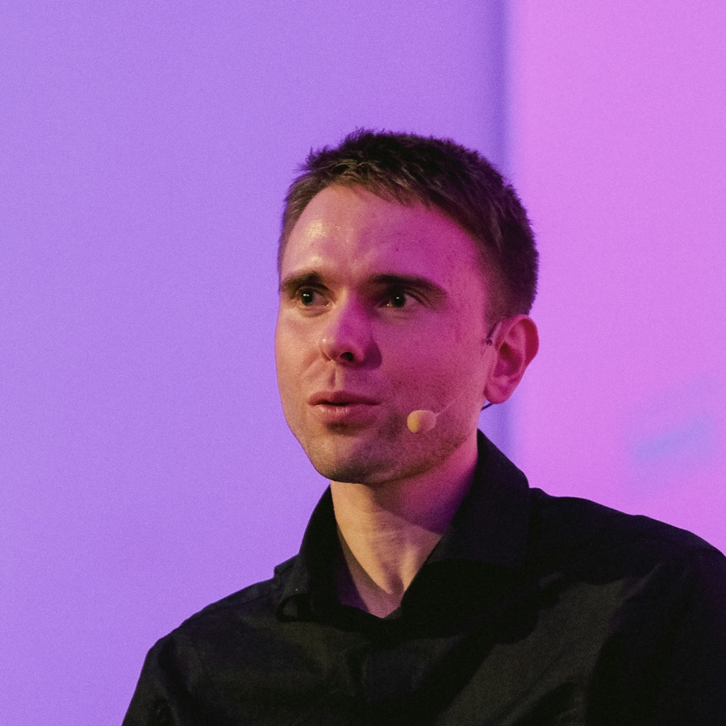

Founder of Niches
Max Pog
I bring founders and investors into the same room, online.
Niches runs virtual conferences for the venture world: VCs, LPs, family offices, angels and venture studios. Since 2023 we have hosted more than twenty of them. The Virtual VC Conf in March 2026 drew over 7,400 registrations.
I also publish research on venture studios and how they raise money. Lately I build small tools with AI, mostly for myself, and keep them here.